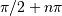

scipy.interpolate.InterpolatedUnivariateSpline.derivative¶
- InterpolatedUnivariateSpline.derivative(n=1)[source]¶
Construct a new spline representing the derivative of this spline.
New in version 0.13.0.
Parameters : n : int, optional
Order of derivative to evaluate. Default: 1
Returns : spline : UnivariateSpline
Spline of order k2=k-n representing the derivative of this spline.
See also
Examples
This can be used for finding maxima of a curve:
>>> from scipy.interpolate import UnivariateSpline >>> x = np.linspace(0, 10, 70) >>> y = np.sin(x) >>> spl = UnivariateSpline(x, y, k=4, s=0)
Now, differentiate the spline and find the zeros of the derivative. (NB: sproot only works for order 3 splines, so we fit an order 4 spline):
>>> spl.derivative().roots() / np.pi array([ 0.50000001, 1.5 , 2.49999998])
This agrees well with roots  of cos(x) = sin’(x).